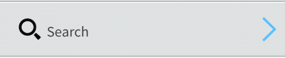
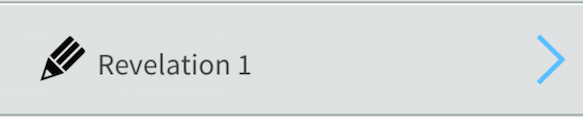
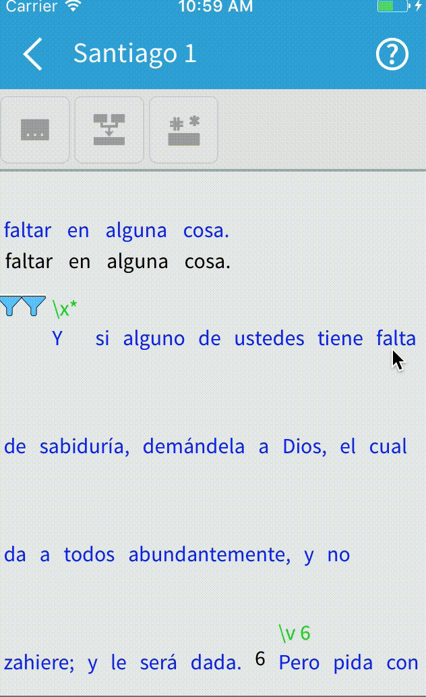

Adapt It Mobile is designed for translation between related languages. This section gives step-by-step instructions on how to use Adapt It Mobile to perform the translations.
- Searching for a document of chapter to adapt
- Adapting from where you left off
- Adapting basics
- Inserting a placeholder
- Inserting a retranslation
Searching for a document or chapter to adapt
- Make sure you have followed the steps to Create or Copy a project, and have imported some documents into Adapt It Mobile.
- Start Adapt It Mobile. On the main screen, you should see a list of available actions.
-
Click on the Search button:

If you do not see a Search button, verify that you have imported some documents into Adapt It Mobile. Once you have clicked the Search button, the Search screen displays.
- To find a book or chapter to adapt, either click in the search field and start typing the name of the book or click the drop-down button and select the book from the list of imported books.
- A list of available chapters will display. Click on the desired chapter to begin adapting.
Adapting from where you left off
- Make sure you have followed the steps to Create or Copy a project, and have imported some documents into Adapt It Mobile.
-
Start Adapt It Mobile. From the main screen, you should see a list of available actions.
If you only see a Settings and Import Documents button in this list, verify that you have imported some documents into Adapt It Mobile.
-
The last action should be the name of a chapter or book that you have imported into the project:

If this is your first time opening the project actions after importing documents, this will be the first chapter of the first document you imported (or the first document, if this was a text file). Otherwise, it will be the document and chapter you last adapted. Click on this link to open that chapter and start adapting.
Adapting basics
Adapting is the heart of the Adapt It Mobile program. If you are familiar with the desktop version of Adapt It, the controls should feel familiar to you.
Adapt It Mobile allows you to translate a single chapter at a time. The text is laid out with the source text just above the corresponding target text, and any markers just above the source text. As you add target text translations, Adapt It Mobile will remember the words and phrases you’ve used. If you come across a word or phrase you’ve translated before, Adapt It Mobile will suggest that same word or phrase.
For a quick walkthrough of the controls on the Adaptation page, click on the help / question mark icon [?] in the upper right hand side of the screen.
To translate a word
Click on the area just below the source word. You should see an edit box display (and the software keyboard open up if you don’t have an external keyboard attached). Type in the equivalent word in the target language.
To translate a phrase
- Drag over the words that make up the phrase you want to translate. You should see them highlight in blue as you do so.
- Click the Phrase button in the toolbar. You should see the words combine into a single phrase, with a new target edit field just below it. Type in the equivalent phrase in the target language.

To move to the next / previous edit field
Android
Most Android software keyboards do not include a forward / backward arrow key. To get around this, Adapt It Mobile has two buttons on the toolbar [ < ] and [ > ], that allow you to go to the previous and next untranslated fields, respectively.
iOS
Apple’s on-screen / software keyboard does have a previous / next button. These should be used to navigate to the previous and next untranslated fields.
Inserting a placeholder
Placeholders are used when there is a word or phrase in the target language that is not in the source language. To insert a placeholder, follow these steps:
- Click on the source word (or phrase) just after where you need to insert a placeholder.
- Click on the Placeholder button in the toolbar. You should see an extra place to the left of your old selection, with an edit field. Enter in the word or phrase in the target language.
Inserting a retranslation
Retranslations are used when the syntax or exegesis of the adaptation is incorrect or misleading. When you add a retranslation, Adapt It Mobile does not add an entry to the Knowledge Base, as there is no meaningful relation between the source text and the target text.
To create a retranslation, complete the following steps:
- Click or drag over the word(s) in the source language that you’ll be providing a retranslation for.
- Click on the Retranslation button in the toolbar. You’ll see the words combine into one unit, with an edit field below it. Type in the retranslation.